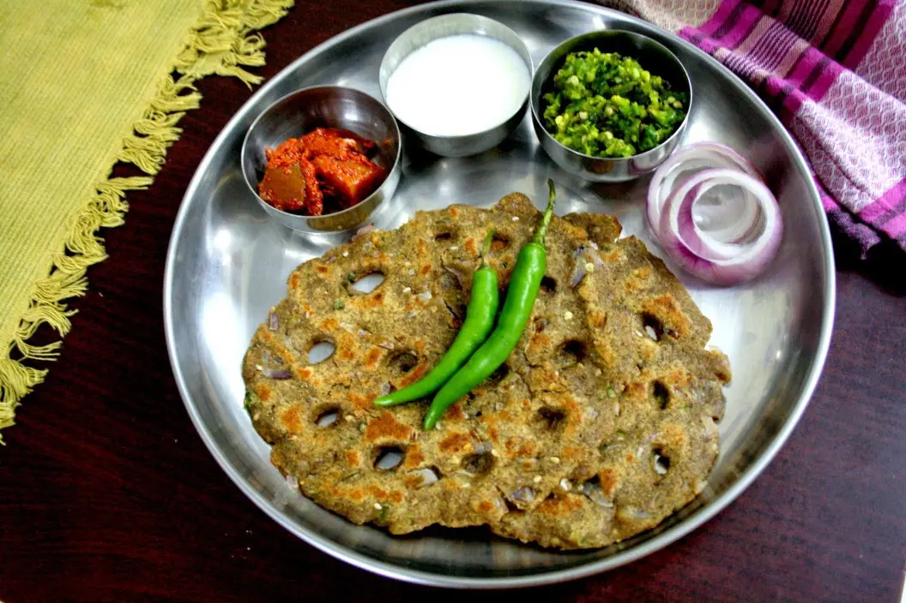

Thalipeeth
⭐⭐⭐⭐⭐ 4.8 Rating | ⏱ 45 Minutes | 🍽 2 Servings
Category
Breakfast
Difficulty
Easy
Calories
195 kcal
Cooking Style
Tempered
📋 Ingredients
- 1/2 cup Jowar flour
- 1/4 cup Bajra flour
- 1/4 cup Besan (gram flour)
- 1/4 cup Whole wheat flour
- 2 tbsp Rice flour
- 1 large onion (finely chopped)
- 2 green chillies (minced)
- 1/2 inch ginger (grated)
- 1/4 cup fresh coriander (chopped)
- 1 tsp Cumin seeds
- 1 tsp Carom seeds (Ajwain - crushed)
- 1 tbsp White sesame seeds
- 1/2 tsp Turmeric
- 1 tsp Red chilli powder
- Salt to taste
- Warm water (for kneading)
- Oil or Ghee (for shallow frying)
🍳 Required Utensils
- Cast-iron tawa
- moist cotton cloth/butter paper
- mixing bowl
- spatula
📖 Introduction
Thalipeeth is a traditional, savory Maharashtrian multi-grain flatbread. Made with a roasted flour blend (Bhajani) along with onions, herbs, and spices, it is hand-patted onto a cloth or pan and shallow-fried to crispy perfection.
🔬 Principle
Thalipeeth relies on combining non-glutinous multigrain flours bound together with moisture from onions and warm water. Because gluten is low or absent, the dough cannot be rolled with a pin; instead, it is gently patted out by hand. Small holes poked into the flatbread allow oil to circulate beneath and inside the dough during cooking, ensuring even heat distribution and a crisp crust.
👨🍳 Procedure
- Knead the Dough
- In a large bowl, mix all the flours, spices, sesame seeds, chopped onions, chillies, ginger, and coriander.
- Gradually add warm water and knead into a soft, pliable, non-sticky dough. Rest covered for 10 minutes.
- Spread a clean, wet cotton cloth or parchment paper over a flat surface.
- Take a lemon-sized ball of dough and place it in the center.
- Wet your fingers with cold water and pat the dough evenly into a thin, round disc (about 5–6 inches wide).
- Using your index finger, press 3 to 5 small holes across the surface of the flattened disc.
- Heat a cast-iron tawa on medium heat and grease it with 1/2 tsp oil.
- Carefully invert the cloth over the tawa to transfer the flatbread onto the hot surface, then gently peel away the cloth.
- Drizzle a few drops of oil or ghee into the holes and around the edges of the thalipeeth.
- Cover with a lid and cook on medium heat for 2–3 minutes until the bottom turns golden brown.
- Flip and cook uncovered on the other side for another 2 minutes until crisp..
⚠ Precautions
- High fiber content requires adequate hydration.
- Reduce red chillies and green chilli Thecha if you are prone to acidity or heartburn.
💡 Chef Tips
- Always wet your fingers with cold water before patting the dough to keep it from sticking to your hands and to get an even thickness.
- The signature holes poked into the dough allow hot oil to pool inside, crisping the center at the same rate as the edges.
- Using a well-seasoned cast-iron skillet provides superior heat retention, giving the flatbread its signature charred spots and crunch compared to non-stick pans.
🥗 Nutrition Facts
| Nutrient | Amount |
|---|---|
| Calories | 195 kcal |
| Protein | 6 g |
| Carbohydrates | 30 g |
| Fat | 6.5 g |
| Fiber | 5 g |
🍽 Serving Suggestions
- Serve piping hot topped with a dollop of fresh white butter (Loni) or ghee.
- Pairs traditionally with fresh curd (yogurt), green chilli Thecha (spicy garlic-chilli paste), or dry garlic-coconut chutney.
🌿 Health Benefits
- Packed with complex carbohydrates, dietary fiber, and plant protein due to the combination of millet, chickpea, and wheat flours. Helps regulate blood sugar levels.
✅ Result
A rustic, golden-brown flatbread featuring a crispy outer edge, a soft, well-cooked interior, and a deep, nutty flavor enhanced by toasted seeds and spices.
🎥 Watch Recipe Video
Learn the complete recipe by watching the step-by-step video.
▶ Watch on YouTube